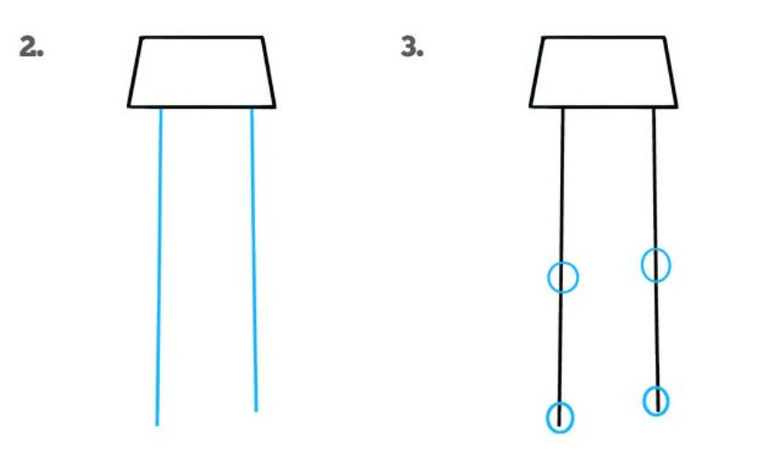
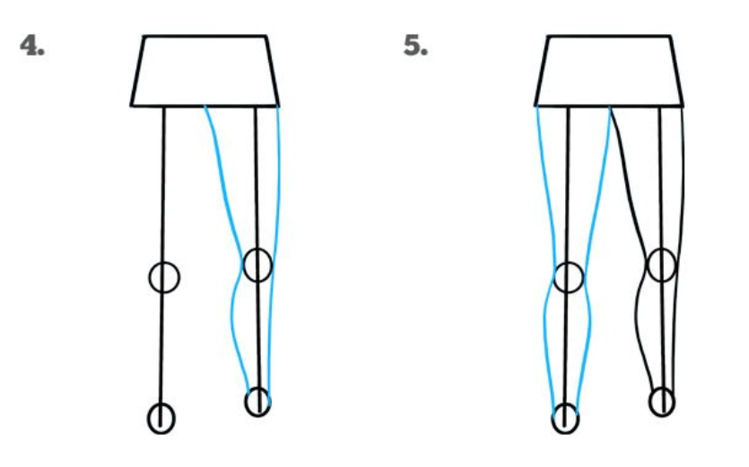
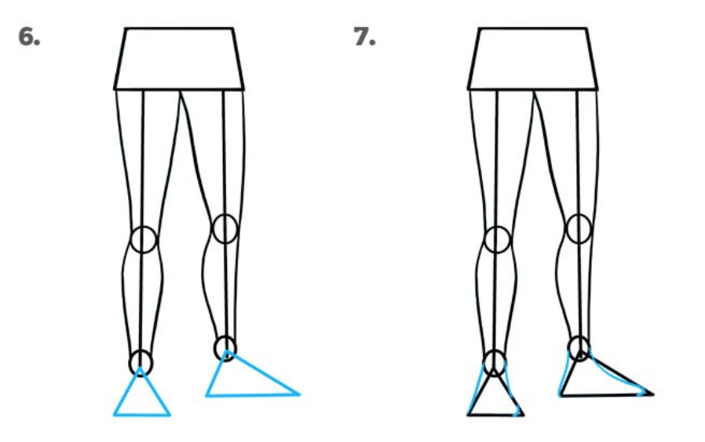
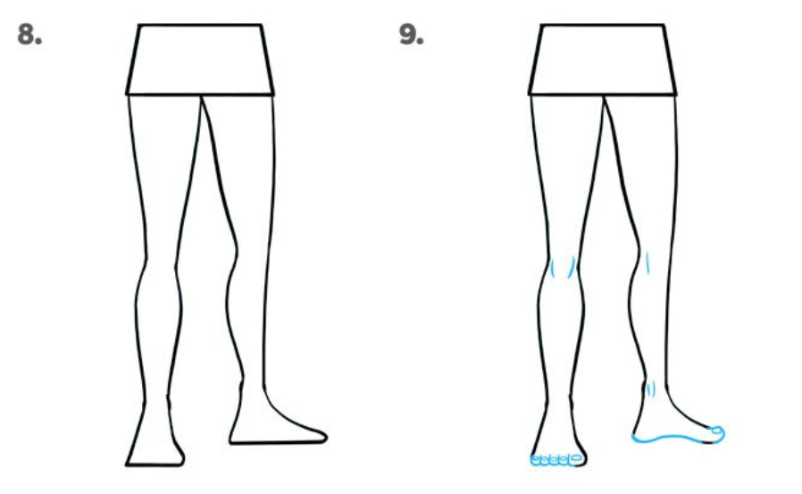

Selamat Datang Di

Belajar Menggambar Mudah Dan Asyik
Legs
-
untuk membuat kaki, kita membutuhkan pinggul untuk meletakkan kaki yang kita buat, bentuk dasar pinguul bisa denga bangun datar trapesium.
-
setelah kita buat bentuk dasar pinggul kta bisa memberikan garis untuk membentuk daasar kaki, setelah itu berikan batas antara lutut dan pergelangan kaki menggunakn lingkaran.
 -
langkah selanjutnya kita berikan bentuk kakinya (jangan lupa bedakan antara paha dan betis, juga arah kaki itu menghadap kemana).
 -
setelah itu baru kita buat telapak kakinya dengan bentuk dasar segitiga (bisa dengan bangun datar lain). jangan luypa arah kemana kaki itu menghadap.
 -
langkah terakhir adalah finishing. kita bisa membentuk detail nya seperti jari kaki dan garis lengkung untuk membentuk lutut.
